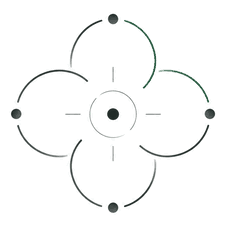

AEKR
AI Engineering Knowledge Racking
Orchestration Verification Control
An AI-native, human-orchestrated software engineering practice. We turn ambiguous ideas and operational problems into engineering outcomes you can inspect, verify, and own. Humans orchestrate. Machines execute.
The practice
What AEKR does
Most software risk is created before anyone writes code — in scope that was never resolved, architecture that was assumed, and constraints nobody wrote down.
AEKR applies AI to engineering work under explicit human control. Agents execute; the engineering judgement, boundaries, and acceptance decisions stay with a person who is accountable for them.
-
Uncertainty first
The expensive unknowns — scope, architecture, integration, constraints, risk — get resolved before implementation budget is committed.
-
Traceable by construction
Each decision links back to the intent that produced it and forward to the evidence that validates it.
-
Bounded execution
Work is decomposed into units small enough to verify and accept individually.
-
Transferable output
Documentation, architecture, and repositories stay useful to any competent engineering team.
Control model
Gravital Orchestration
Human intent and governance hold the centre. Bounded engineering work is organised around it.
That is the idea behind the name. Direction does not emerge from the tooling — it is set by a person, and everything the agents do is arranged around that centre.
- Quark work unit
- A bounded piece of work with its own scope, acceptance criteria, and evidence.
- Q-Spin execution step
- A smaller step inside a Quark, sized so it can be executed and checked in a single pass.
- Interferometry conformance review
- Intent, requirements, design, implementation, and evidence compared against the agreed acceptance criteria.
Quarks and Q-Spins are units of work, not autonomous agents. Nothing advances past a gate without a person authorising it.
Delivery lifecycle
How the work progresses
Seven stages, each with an explicit exit. Interferometry runs across them as the verification layer rather than a stage of its own.
-
Cosmology Idea & problem framing
What the problem actually is, who it affects, and what a good outcome looks like.
-
Discovery
Requirements, workflows, constraints, dependencies, and the assumptions being made explicit.
-
Nebulation Design
Architecture, interfaces, data and integration shape, and the technical direction that follows from them.
-
Supernova Build
Implementation executed as Quarks and Q-Spins, so progress stays visible and reversible at every step.
-
Examination Testing & validation
Behaviour tested against acceptance criteria, with unit-level checks recorded as Flavor Review.
-
Orbital Release Release
A release that is authorised, reproducible, and able to be rolled back.
-
Entropical Delivery Delivery & handoff
Handover of the software, the decisions behind it, and the documentation needed to keep owning it.
Interferometry Verification crosses the lifecycle at each gate — comparing what was intended, what was designed, what was built, and what the evidence shows.
Engagements
One project. Different depths of completion.
AEKR engagements are structured as progressive degrees of engineering completion. You decide how far we carry the work.
Start with clarity — what should be built, why, on what architecture, and what it will realistically take. Continue into engineering structure and implementation when the case for it is made, not before.
Each depth begins from work already accepted, so the same engineering effort is not paid for twice.
- Staged investment with explicit acceptance boundaries
- Documented decisions you can audit
- Artifacts that transfer to any competent team
What you receive at any depth stands on its own. If another team carries the project forward, the work still holds.
Why this model
Controlled engineering, accelerated
The value is not that AI writes code faster. It is that the expensive decisions get made earlier, on evidence, with someone accountable for them.
-
Reduced uncertainty
Scope, architecture, and risk resolved before the heavy spending starts.
-
Controlled investment
Commit at each depth on the strength of what the last one produced.
-
Traceable decisions
Why something was built a certain way stays recoverable long afterward.
-
Human accountability
A named person authorises what ships, and remains answerable for it.
Contact
Tell us what you need built
AEKR engagements scale with how far you want us to carry the product — from engineering clarity through implementation.
Thank you.
We’ll reach out soon.